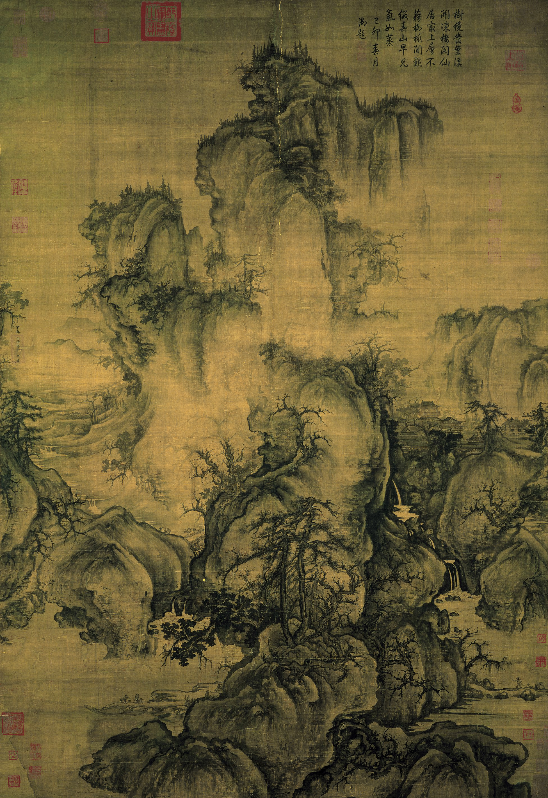
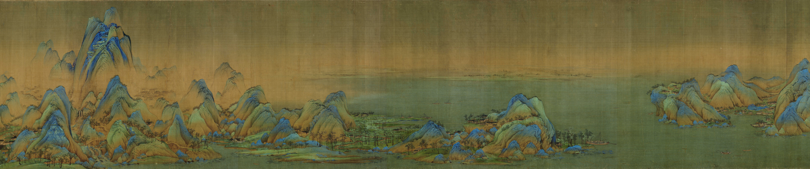

全场总结 · 论点回收 / 四辩
回收：三个分论点，共同回应什么？

多维感知
观看方向与身体尺度

主动参与
展开长卷，形成观看经验

精神联系
记忆、想象与山川神遇
既有论据局部：《早春图》《千里江山图》《搜尽奇峰图》。
由空间认知，到空间体验，再到空间意境。
全场总结 · 论点回收 / 四辩

观看方向与身体尺度

展开长卷，形成观看经验
记忆、想象与山川神遇
既有论据局部：《早春图》《千里江山图》《搜尽奇峰图》。